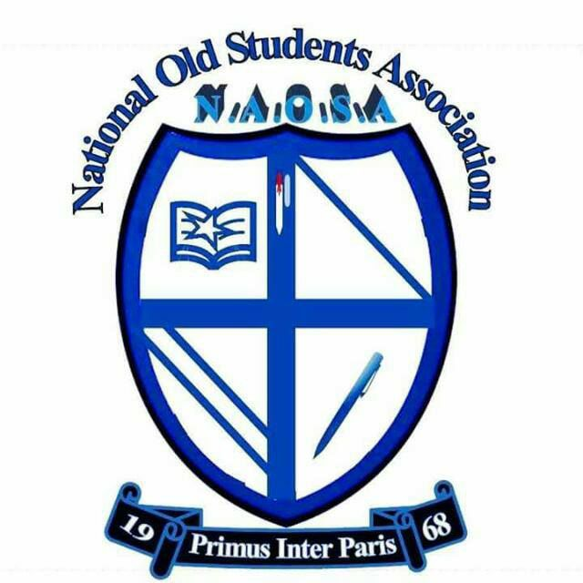

Site Name
National Secondary School Awka
Site Purpose
At National Secondary School Awka, our purpose is to provide the best environment for students to: Acquire knowledge, develop potentials, Inculcate values, Integrate with Nigerian culture and arts, become technologically inclined, and become problem solvers in the society. This in entirety will enable them to “SHOW THE LIGHT”. Our online presence is aimed at showcasing our school to the public to let keep them abreast with all happening in the school in enable them become a part of this nurturing and rearing process in our students.
Target Audience
Our audience encompasses children all over the country who we receive as potentials and with nurture, teaching, coaching, and many other human refining and improvement skills, tools and mechanisms; we not only bring out the best in them but prepare them to be positive contributors in their lives, families and society. Our audience cuts across the parents of these children and others who wish to be exposed the happening of the school. Through this site, we expose them to the feeling of being in our school. The use of laptops and tablets are the primary source of accessing this website.
Logo
Color Schema
| Primary Color | Secondary Color | Tertiary Color |
|---|---|---|
| #146CD2 | #ba4a6e | #FFFFFF |
Typography
Font1
Apple-system
Font2
Lato
Site Map and Content
School Motto: Show the Light
School Slogan: Synchronizing Your Future, welcome to a new beginning
Welcome to National Secondary School. Our aims and objectives are to:
1. To help students acquire knowledge, skills and ability to contribute to the development
of
the society.
2. To inculcate a positive moral life and spiritual value, to enable the students to develop
interpersonal and human relationship.
3. To integrate the students with their culture, arts, languages and values.
4. To develop the students understanding, to appreciate and respect the opinions and feelings
of others.
5. To promote higher level of discipline and integrity among the students.
6. To train students towards understanding and appreciating the dignity of labour.
7. To train students to live an exemplary life and to be good citizens of the country.
8. To prepare the children for future life by equipping them with the spirit of loyalty,
dedication, intelligent and to be conscious of their responsibilities.
9. To produce people who can apply immediate knowledge to improve and find solutions to
environmental and social problems.
REQUIREMENTS FOR ADMISSION INTO NATIONAL SECONDARY SCHOOL AWKA
Basic steps for Admission of students into NATIONAL SECONDARY SCHOOL AWKA :
1. Inquiry visitation by parents
2. Purchase of Admission form
3. Release of Evaluations / Interviews Results
4. Payment of relevant fees and registration of pupils/student.
5. Welcome Briefing/Issuance of class admission slip
6. The schools also offer Transportation Service at Extra Cost
Bank Accounts : Diamond Bank ,Account Name :., Account No:
Bank Accounts : GT Bank ,Account Name :., Account No:
For detailed explanation, please call any of the following numbers: 08033912398
Note:
1. Admission into NATIONAL SECONDARY SCHOOL AWKA is open to students regardless of race, sex,
religion, ethnicity or nationality and is accompanied by the full rights and privileges due to every
pupil/students of the school.
CONTACT US
1. Address: 9 Nweke Nwobuchi Street Umudioka, Awka, Anambra State
2. Phone : please call any of the following numbers: 08033912398
3. Email: nationalgroupofschools.com